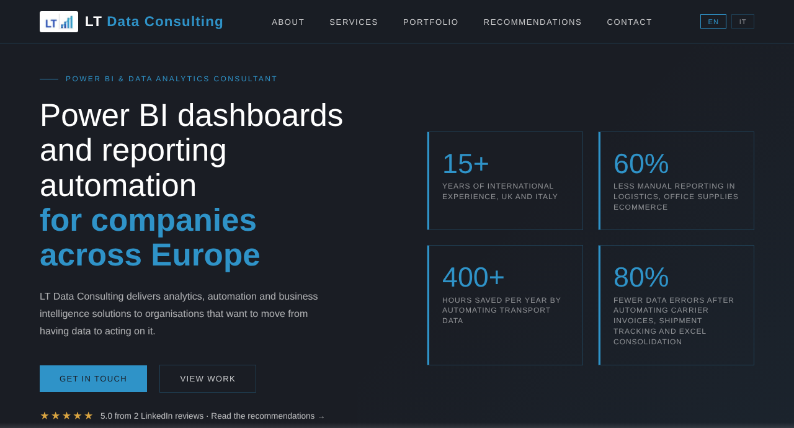
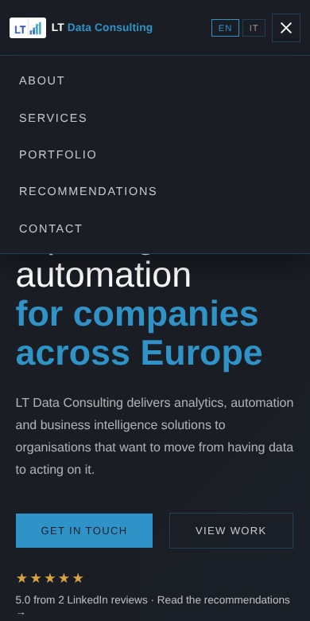

The challenge
LT Data Consulting started with one page that switched between English and Italian in the browser. Google saw a single page, so search results mixed an Italian title with an English description, and every project sat in one long list with no page of its own.
The site also needed proof for prospects (case studies, reviews) and a way to see whether anyone was actually finding it through search.
The solution
Four steps, each checked against what Google and Bing actually report:
StructureA separate page for each language and each project, linked with hreflang tags
ContentEleven case studies in both languages, with client data removed from every image
Search set-upSitemap, robots.txt, structured business data and meta descriptions within search limits
MeasureSearch Console and Bing Webmaster Tools, plus a Looker Studio dashboard
What the solution includes
24 pagesTwo home pages and eleven case studies, each in English and Italian
Language switchChanging language keeps the reader on the same paragraph
Mobile firstCollapsible menu, back-to-top button and layouts tested at phone width
Structured dataBusiness name, logo, VAT number, phone and LinkedIn profile readable by Google
Search dashboardClicks, impressions and position by language, page type and brand vs non-brand searches
Client-owned set-upDomain, code and search accounts in the owner's name; no shared passwords


Results
- Each language now has its own search result, with title and description in the same language
- All pages submitted through the sitemap to Google Search Console and Bing Webmaster Tools, and indexed
- Every project has its own page that can be linked from LinkedIn, an email or a proposal
- A live dashboard shows which searches bring people to the site and which pages they land on
- The same set-up is now offered to clients, with every account in their name
Stack
HTML
CSS
JavaScript
GitHub Pages
Search Console
Bing Webmaster
Looker Studio
This is my own website, so there is no client data on this page. Screenshots show the live site.